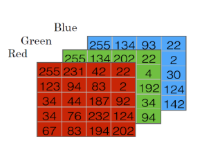
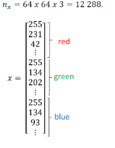
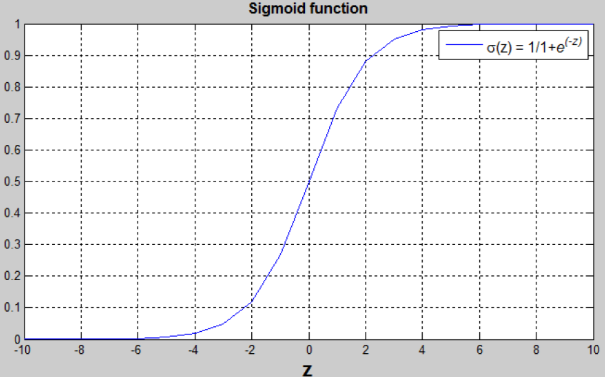
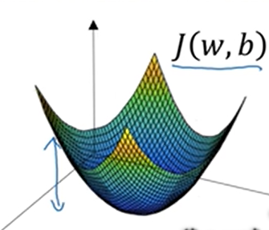
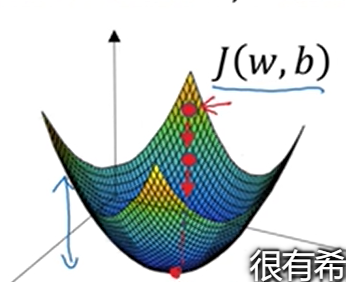
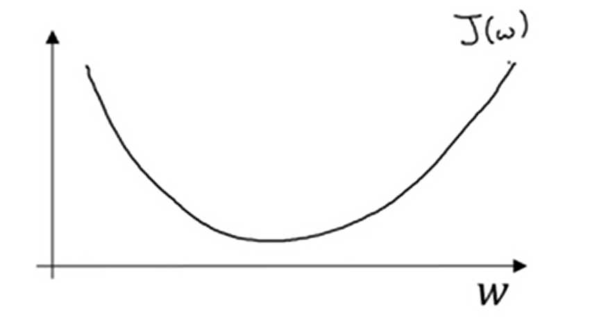

Logistic回归
二分分类
| 模型（3层NN） | 训练准确度 | 问题/评价 |
|---|---|---|
| 零初始化 | 50% | 不能破坏对称 |
| 大型随机初始化 | 83% | 权重过大 |
| He初始化 | 99% | 要求一定的方法 |
引子
比如有这样一张图

如果这张图判定为有小猫则输出1，否则输出0，我们用y来表示输出结果标签。
首先，图像在计算机中是由RGB三种颜色组成的。如果该图为64×64像素大小，那么就有三个64×64的矩阵。对应红绿蓝三种颜色的亮度。

把里面所有元素（即像素值）都提取出来放入一个特征向量x，那么结果就会是这样：

将来用到的符号
用一对(x,y)来表示一个单独的样本，x是$n_x$维的特征向量，y值为0或1。训练集由m个训练样本构成。
$（x^{(1)},y^{(1)})$表示样本1的输入与输出，$（x^{(2)},y^{(2)})$表示样本2的输入与输出.....$（x^{(m)},y^{(m)})$表示样本m的输入与输出
m为训练集总数，$m=m_{train}$，$m_{test}$表示测试集的数量。
最后用更紧凑的符号表示训练集
logistic回归
已知: x，
要求: $\hat{y}=P(y=1|x)$
参数: X为$n_x$维向量($x∈R^{n_x}$)，回归参数$w∈R^{n_x}$,$b∈R$
输出: $\hat{y}=w^Tx+b$
但是因为希望$\hat{y}$为y=1的概率，所以$\hat{y}$应介于0,1之间。
所以$\hat{y}=σ(w^Tx+b)$【取sigmoid函数】。
$σ(z)=\frac{1}{1+e^{-z}}$
为了训练logistic回归模型的参数w以及b，需要定义一个成本函数。
$\hat{y}$是对一个训练样本x来说，对于每个训练样本使用这些带有圆括号的上标。方便应用说明，还有区分样本，你的训练样本(i)对应的预测值是$\hat{y}^{(i)}$是用训练样本通过sigmoid函数作用到$w^Tx+b$得到的。
损失函数/误差函数
可以用来衡量算法的运行情况。我们可以定义损失为$L(\hat{y},y)=\frac{(\hat{y}-y)^2}{2}$，但是大家一般不会这样做，因为之后讨论的优化问题会变成非凸的，最后会得到很多个局部最优解，梯度下降法可能找不到全局最优值。
因此，为了能够达到平方相似的目的，误差平方越小越好，我们定义损失函数为：
当y=1时：$L(\hat{y},y)=-log\hat{y}$ 需要$\hat{y}$足够的大，但$\hat{y}<1$,所以$\hat{y}->1$
当y=0时：$L(\hat{y},y)=-log(1-\hat{y})$ 需要$\hat{y}$足够的小，但$\hat{y}>0$,所以$\hat{y}->0$.
损失函数是在单个训练样本中定义的，它衡量了在单个训练样本上的表现。
成本函数（Cost Function）
它衡量的是在全体训练样本上的表现
损失函数只适用于单个训练样本，成本函数基于参数总成本，所以在训练logistic回归模型时，我们要找到合适的w和b是这里的成本函数J尽可能地小
梯度下降法
用梯度下降法训练或学习训练集上的参数w和b。
J(w,b)是在水平轴w和b上的曲面，其高度代表了J(w,b)在某一点的值。
如图，J是这样的一个凸函数。用某个初始值，初始化w和b。对于logistic回归而言，几乎任意的初始化方案都有效，通常用0。但是对于logistic回归，我们通常不这么做。但由于该函数是凸的，无论哪里初始化，都应该达到统一点火大致相同的点。梯度下降法所做的就是，从初始点开始，朝最陡的下坡方向一步步往下走，并很有希望收敛到这个（接近）全局最优解。
希望得到最小化J(w)，为了简化，首先忽略b，仅用一维曲线，代替多维曲线。
梯度下降法是这样做的：
重复执行以下的更新操作：
$\alpha$表示学习率，可以控制每一次迭代，可以控制每一次迭代，或者梯度下降法中的步长。之后会讨论如何选择$\alpha$。其次，在这里，这个数是导数，这就是对参数w的更新，或者变化量。代码中，我们会用dw表示导数。即:
根据公式，该函数反复更新，会逐渐的接近最低点。
例如：
正向传播
反向传播
最小化损失函数

伪代码
m个样本的logistic回归
J=0;
for i=1 to n
dw[i]=0
db=0;
for i=1 to m
z[i]=w^T*x[i]+b;
a[i]=sigmoid(z[i]);
J+=-[(y[i])*log(a[i])+(1-y[i])*log(1-a[i])];
dz[i]=a[i]-y[i];
//n个w,n个feature，n个循环
for j=1 to n
dw[j]+=x1[i]*dz[i];
db+=dz[i];
J/=m;
for j=1 to n
dw[i]/=m;
db/=m;
$dw_1=\frac {\partial J}{\partial w_1}$
$w_1=w_1-\alpha dw_1$
$w_2=w_2-\alpha dw_2$
$b=b-\alpha db$
这样反复迭代就可以修正$w_1,w_2$,减少损失，来逼近真相
向量化
什么是向量化？
在logistic回归中你需要去计算$z=w^Tx+b$，w是列向量，x也是列向量。如果有很多特征，他们就是非常大的向量，所以w和x都是R内的$n_x$维的向量。所以去计算W'X需要向量化，后会加快其速度。
$Z=W^TX+B$
此时$W= \left[ \begin{matrix} w_1 \\ w_2 \\ \vdots \\ w_m \end{matrix} \right]$，$X= \left[ \begin{matrix} x_1 \\ x_2 \\ \vdots \\ x_m \end{matrix} \right]$。
numpy提供了优化过的向量运算，能够使原来的循环运算变得非常快。
import numpy as np z=np.dot(w.T,x)+b
上文的伪代码中，
for i=1 to n dw[i]=0
可以写为
dw=np.zero((n-x,1))
同样的
for j=1 to n dw[j]+=x1[i]*dz[i];
可以写为
dw+=x[i]*dz[i]
同理
for j=1 to n dw[i]/=m;
可以写为
dw/=m
当然，db的求法也有优化
db=np.sum(dz)/m
所以，综上，所有for循环都可以用向量来代替其功能，优化其性能。
z=np.dot(w.T,x)+b A=sigmoid(z) dz=A-Y dw=(X*dz.T)/m db=np.sum(dz)/m w-=lr*dw b-=lr*db
for示例：
import time import numpy as np x1 = [9, 2, 5, 0, 0, 7, 5, 0, 0, 0, 9, 2, 5, 0, 0] x2 = [9, 2, 2, 9, 0, 9, 2, 5, 0, 0, 9, 2, 5, 0, 0] ### CLASSIC DOT PRODUCT OF VECTORS IMPLEMENTATION ### tic = time.process_time() dot = 0 for i in range(len(x1)): dot+= x1[i]*x2[i] toc = time.process_time() print ("dot = " + str(dot) + "\n ----- Computation time = " + str(1000*(toc - tic)) + "ms") ### CLASSIC OUTER PRODUCT IMPLEMENTATION ### tic = time.process_time() outer = np.zeros((len(x1),len(x2))) # we create a len(x1)*len(x2) matrix with only zeros for i in range(len(x1)): for j in range(len(x2)): outer[i,j] = x1[i]*x2[j] toc = time.process_time() print ("outer = " + str(outer) + "\n ----- Computation time = " + str(1000*(toc - tic)) + "ms") ### CLASSIC ELEMENTWISE IMPLEMENTATION ### tic = time.process_time() mul = np.zeros(len(x1)) for i in range(len(x1)): mul[i] = x1[i]*x2[i] toc = time.process_time() print ("elementwise multiplication = " + str(mul) + "\n ----- Computation time = " + str(1000*(toc - tic)) + "ms") ### CLASSIC GENERAL DOT PRODUCT IMPLEMENTATION ### W = np.random.rand(3,len(x1)) # Random 3*len(x1) numpy array tic = time.process_time() gdot = np.zeros(W.shape[0]) for i in range(W.shape[0]): for j in range(len(x1)): gdot[i] += W[i,j]*x1[j] toc = time.process_time() print ("gdot = " + str(gdot) + "\n ----- Computation time = " + str(1000*(toc - tic)) + "ms")
for结果
dot = 278
----- Computation time = 0.0ms
outer = [[81. 18. 18. 81. 0. 81. 18. 45. 0. 0. 81. 18. 45. 0. 0.]
[18. 4. 4. 18. 0. 18. 4. 10. 0. 0. 18. 4. 10. 0. 0.]
[45. 10. 10. 45. 0. 45. 10. 25. 0. 0. 45. 10. 25. 0. 0.]
[ 0. 0. 0. 0. 0. 0. 0. 0. 0. 0. 0. 0. 0. 0. 0.]
[ 0. 0. 0. 0. 0. 0. 0. 0. 0. 0. 0. 0. 0. 0. 0.]
[63. 14. 14. 63. 0. 63. 14. 35. 0. 0. 63. 14. 35. 0. 0.]
[45. 10. 10. 45. 0. 45. 10. 25. 0. 0. 45. 10. 25. 0. 0.]
[ 0. 0. 0. 0. 0. 0. 0. 0. 0. 0. 0. 0. 0. 0. 0.]
[ 0. 0. 0. 0. 0. 0. 0. 0. 0. 0. 0. 0. 0. 0. 0.]
[ 0. 0. 0. 0. 0. 0. 0. 0. 0. 0. 0. 0. 0. 0. 0.]
[81. 18. 18. 81. 0. 81. 18. 45. 0. 0. 81. 18. 45. 0. 0.]
[18. 4. 4. 18. 0. 18. 4. 10. 0. 0. 18. 4. 10. 0. 0.]
[45. 10. 10. 45. 0. 45. 10. 25. 0. 0. 45. 10. 25. 0. 0.]
[ 0. 0. 0. 0. 0. 0. 0. 0. 0. 0. 0. 0. 0. 0. 0.]
[ 0. 0. 0. 0. 0. 0. 0. 0. 0. 0. 0. 0. 0. 0. 0.]]
----- Computation time = 0.0ms
elementwise multiplication = [81. 4. 10. 0. 0. 63. 10. 0. 0. 0. 81. 4. 25. 0. 0.]
----- Computation time = 15.625ms
gdot = [19.95612413 22.84490116 16.60013824]
----- Computation time = 0.0ms
numpy示例
x1 = [9, 2, 5, 0, 0, 7, 5, 0, 0, 0, 9, 2, 5, 0, 0] x2 = [9, 2, 2, 9, 0, 9, 2, 5, 0, 0, 9, 2, 5, 0, 0] ### VECTORIZED DOT PRODUCT OF VECTORS ### tic = time.process_time() dot = np.dot(x1,x2) toc = time.process_time() print ("dot = " + str(dot) + "\n ----- Computation time = " + str(1000*(toc - tic)) + "ms") ### VECTORIZED OUTER PRODUCT ### tic = time.process_time() outer = np.outer(x1,x2) toc = time.process_time() print ("outer = " + str(outer) + "\n ----- Computation time = " + str(1000*(toc - tic)) + "ms") ### VECTORIZED ELEMENTWISE MULTIPLICATION ### tic = time.process_time() mul = np.multiply(x1,x2) toc = time.process_time() print ("elementwise multiplication = " + str(mul) + "\n ----- Computation time = " + str(1000*(toc - tic)) + "ms") ### VECTORIZED GENERAL DOT PRODUCT ### tic = time.process_time() dot = np.dot(W,x1) toc = time.process_time() print ("gdot = " + str(dot) + "\n ----- Computation time = " + str(1000*(toc - tic)) + "ms")
结果
dot = 278
----- Computation time = 0.0ms
outer = [[81 18 18 81 0 81 18 45 0 0 81 18 45 0 0]
[18 4 4 18 0 18 4 10 0 0 18 4 10 0 0]
[45 10 10 45 0 45 10 25 0 0 45 10 25 0 0]
[ 0 0 0 0 0 0 0 0 0 0 0 0 0 0 0]
[ 0 0 0 0 0 0 0 0 0 0 0 0 0 0 0]
[63 14 14 63 0 63 14 35 0 0 63 14 35 0 0]
[45 10 10 45 0 45 10 25 0 0 45 10 25 0 0]
[ 0 0 0 0 0 0 0 0 0 0 0 0 0 0 0]
[ 0 0 0 0 0 0 0 0 0 0 0 0 0 0 0]
[ 0 0 0 0 0 0 0 0 0 0 0 0 0 0 0]
[81 18 18 81 0 81 18 45 0 0 81 18 45 0 0]
[18 4 4 18 0 18 4 10 0 0 18 4 10 0 0]
[45 10 10 45 0 45 10 25 0 0 45 10 25 0 0]
[ 0 0 0 0 0 0 0 0 0 0 0 0 0 0 0]
[ 0 0 0 0 0 0 0 0 0 0 0 0 0 0 0]]
----- Computation time = 0.0ms
elementwise multiplication = [81 4 10 0 0 63 10 0 0 0 81 4 25 0 0]
----- Computation time = 0.0ms
gdot = [23.67976052 25.20760724 22.84591973]
----- Computation time = 0.0ms
可以看到向量化速度远远快于for，所以一定要尽量避免for循环。所以，以后使用for前先看看有没有numpy的内置方法【比如向量的exp方法，log方法，等等】。
Python中的广播
优点：
极其方便快捷
缺点：
可能会产生一些奇怪的内在逻辑错误。
a=np.random.randn(5) print(a.shape)
结果就是
(5,)
然后你会发现，a和a.T是一样的向量。
但是
print(np.dot(a,a.T))
会生成一个数字。
尽量少用形如（n,）的这种秩为1的数组，使用(n,1)确保不会出现a*a.T不会出现问题。
Logistic回归代码：
导包
import numpy as np import matplotlib.pyplot as plt import h5py import scipy from PIL import Image from scipy import ndimage #找不到lrutils文档及其使用方法，就在网上找了训练数据集即加载代替 #from lrutils import load_dataset %matplotlib inline
#网上下的加载器 def load_dataset(): train_dataset = h5py.File('train_catvnoncat.h5', "r") train_set_x_orig = np.array(train_dataset["train_set_x"][:]) # your train set features train_set_y_orig = np.array(train_dataset["train_set_y"][:]) # your train set labels test_dataset = h5py.File('test_catvnoncat.h5', "r") test_set_x_orig = np.array(test_dataset["test_set_x"][:]) # your test set features test_set_y_orig = np.array(test_dataset["test_set_y"][:]) # your test set labels classes = np.array(test_dataset["list_classes"][:]) # the list of classes train_set_y_orig = train_set_y_orig.reshape((1, train_set_y_orig.shape[0])) test_set_y_orig = test_set_y_orig.reshape((1, test_set_y_orig.shape[0])) return train_set_x_orig, train_set_y_orig, test_set_x_orig, test_set_y_orig, classes
问题的描述:
你拥有("data.h5")数据集，包含:
- 一个训练集包含 m_train，images 被标记为 cat (y=1) 或 non-cat (y=0)
- 一个测试集包含 m_test，images 被标记为 cat 或 non-cat
- 每张图片都满足shape (num_px, num_px, 3) 3:3个通道(RGB). 因此，每个图像height = num_px，width = num_px。
你将构建一个简单的图像识别算法，可以正确地将图片分类为猫或非猫。下面开始加载数据。
# 加载数据 (cat/non-cat) train_set_x_orig, train_set_y, test_set_x_orig, test_set_y, classes = load_dataset()
下面开始测试数据集
# Example of a picture index = 5 plt.imshow(train_set_x_orig[index]) print ("y = " + str(train_set_y[:, index]) + ", it's a '" + classes[np.squeeze(train_set_y[:, index])].decode("utf-8") + "' picture.")
结果是这样的：

查看变量及shape测试【防止bug】
- m_train (训练样本的数量)
- m_test (测试样本的数量)
- num_px (训练集的高和宽)
记住train_set_x_orig是一个numpy-array，他的shape为 (m_train, num_px, num_px, 3). 比如，你可以通过m_train=train_set_x_orig.shape[0]来表现训练集的数量。
### START CODE HERE ### (≈ 3 lines of code) m_train = train_set_x_orig.shape[0] m_test = test_set_x_orig.shape[0] num_px = train_set_x_orig.shape[1] ### END CODE HERE ### print ("Number of training examples: m_train = " + str(m_train)) print ("Number of testing examples: m_test = " + str(m_test)) print ("Height/Width of each image: num_px = " + str(num_px)) print ("Each image is of size: (" + str(num_px) + ", " + str(num_px) + ", 3)") print ("train_set_x shape: " + str(train_set_x_orig.shape)) print ("train_set_y shape: " + str(train_set_y.shape)) print ("test_set_x shape: " + str(test_set_x_orig.shape)) print ("test_set_y shape: " + str(test_set_y.shape))
结果是这样的
Number of training examples: m_train = 209
Number of testing examples: m_test = 50
Height/Width of each image: num_px = 64
Each image is of size: (64, 64, 3)
train_set_x shape: (209, 64, 64, 3)
train_set_y shape: (1, 209)
test_set_x shape: (50, 64, 64, 3)
test_set_y shape: (1, 50)
现在，将shape为$(num_{px}, num_{px}, 3)$的三维矩阵进行预处理【扁平化】， 转换为shape为$(num_{px} * num_{px} * 3, 1)$的向量方便后续操作。
# Reshape训练数据并且进行简单测试 ### START CODE HERE ### (≈ 2 lines of code) train_set_x_flatten = train_set_x_orig.reshape(train_set_x_orig.shape[0], -1).T test_set_x_flatten = test_set_x_orig.reshape(test_set_x_orig.shape[0], -1).T ### END CODE HERE ### print ("train_set_x_flatten shape: " + str(train_set_x_flatten.shape)) print ("train_set_y shape: " + str(train_set_y.shape)) print ("test_set_x_flatten shape: " + str(test_set_x_flatten.shape)) print ("test_set_y shape: " + str(test_set_y.shape)) print ("sanity check after reshaping: " + str(train_set_x_flatten[0:5,0]))
结果:
train_set_x_flatten shape: (12288, 209)
train_set_y shape: (1, 209)
test_set_x_flatten shape: (12288, 50)
test_set_y shape: (1, 50)
sanity check after reshaping: [17 31 56 22 33]
标准化
为了表示彩色图像，必须为每个像素指定红色，绿色和蓝色通道（RGB），因此像素值实际上是从0到255的三个数字的向量。
机器学习中一个常见的预处理步骤是对数据集进行中心化和标准化，这意味着您从每个示例中减去整个numpy数组的平均值，然后将每个示例除以整个numpy数组的标准偏差。但是对于图片数据集来说，它更简单，更方便，几乎可以将数据集的每一行除以255（像素通道的最大值）。
所以让我们标准化我们的数据集。
train_set_x = train_set_x_flatten/255. test_set_x = test_set_x_flatten/255.
你需要记住的是：!!
预处理
面对一个新的数据集，常见的预处理步骤如下：
- 辨清维度以及问题的shape(m_train, m_test, num_px, ...)
- 将数据集从几个一维向量reshape成可使用的矩阵 (num_px * num_px * 3, 1)
- "标准化"数据
建立神经网络
建立神经网络的主要步骤是：
- 定义模型结构（如输入特征的个数）
- 初始化模型的参数
- 循环：
- 计算当前成本（正向传播）
- 计算当前梯度（反向传播）
- 更新参数（梯度下降）
我们经常分别建立1-3，并把它们整合到我们所说的一个函数中model()。
首先，我们先自己使用numpy构造一个sigmoid函数，即$\sigma(z)=\frac {1}{1+e^{-z}}$。
# 子函数: sigmoid def sigmoid(z): """ Compute the sigmoid of z Arguments: z -- A scalar or numpy array of any size. Return: s -- sigmoid(z) """ ### START CODE HERE ### (≈ 1 line of code) s = 1 / (1 + np.exp(-z)) ### END CODE HERE ### return s
初始化函数
下面构造初始化函数【构建一个全0向量】
# 子函数: initialize_with_zeros def initialize_with_zeros(dim): """ This function creates a vector of zeros of shape (dim, 1) for w and initializes b to 0. Argument: dim -- size of the w vector we want (or number of parameters in this case) Returns: w -- initialized vector of shape (dim, 1) b -- initialized scalar (corresponds to the bias) """ ### START CODE HERE ### (≈ 1 line of code) w = np.zeros((dim, 1)) b = 0 ### END CODE HERE ### assert(w.shape == (dim, 1)) assert(isinstance(b, float) or isinstance(b, int)) return w, b
传播
# 子函数: propagate def propagate(w, b, X, Y): """ Implement the cost function and its gradient for the propagation explained above Arguments: w -- weights, a numpy array of size (num_px * num_px * 3, 1) b -- bias, a scalar X -- data of size (num_px * num_px * 3, number of examples) Y -- true "label" vector (containing 0 if non-cat, 1 if cat) of size (1, number of examples) Return: cost -- negative log-likelihood cost for logistic regression dw -- gradient of the loss with respect to w, thus same shape as w db -- gradient of the loss with respect to b, thus same shape as b Tips: - Write your code step by step for the propagation. np.log(), np.dot() """ m = X.shape[1] # 正向反馈(从 X 得到 COST) ### START CODE HERE ### (≈ 2 lines of code) # 激活函数 A = sigmoid(np.dot(w.T, X) + b) # 计算成本函数 cost = -1 / m * np.sum(Y * np.log(A) + (1 - Y) * np.log(1 - A)) ### END CODE HERE ### # 反向传播(求梯度) ### START CODE HERE ### (≈ 2 lines of code) dw = 1 / m * np.dot(X, (A - Y).T) db = 1 / m * np.sum(A - Y) ### END CODE HERE ### assert(dw.shape == w.shape) assert(db.dtype == float) cost = np.squeeze(cost) assert(cost.shape == ()) grads = {"dw": dw, "db": db} return grads, cost
优化器
来回修改w和b【感觉就是在相互磨合】，不断优化w和b的值，是其更加贴近预测。
# 子函数: optimize def optimize(w, b, X, Y, num_iterations, learning_rate, print_cost = False): """ This function optimizes w and b by running a gradient descent algorithm Arguments: w -- weights, a numpy array of size (num_px * num_px * 3, 1) b -- bias, a scalar X -- data of shape (num_px * num_px * 3, number of examples) Y -- true "label" vector (containing 0 if non-cat, 1 if cat), of shape (1, number of examples) num_iterations -- number of iterations of the optimization loop learning_rate -- learning rate of the gradient descent update rule print_cost -- True to print the loss every 100 steps Returns: params -- dictionary containing the weights w and bias b grads -- dictionary containing the gradients of the weights and bias with respect to the cost function costs -- list of all the costs computed during the optimization, this will be used to plot the learning curve. Tips: You basically need to write down two steps and iterate through them: 1) Calculate the cost and the gradient for the current parameters. Use propagate(). 2) Update the parameters using gradient descent rule for w and b. """ costs = [] for i in range(num_iterations): # 计算grads, cost的值 (≈ 1-4 lines of code) ### START CODE HERE ### grads, cost = propagate(w, b, X, Y) ### END CODE HERE ### # 获得w和b的梯度 dw = grads["dw"] db = grads["db"] # 更新w和b(≈ 2 lines of code) ### START CODE HERE ### w = w - learning_rate * dw b = b - learning_rate * db ### END CODE HERE ### # 记录成本 if i % 100 == 0: costs.append(cost) # 每100次训练打印一次成本 if print_cost and i % 100 == 0: print ("Cost after iteration %i: %f" %(i, cost)) params = {"w": w, "b": b} grads = {"dw": dw, "db": db} return params, grads, costs
预测函数
# 子函数: predict def predict(w, b, X): ''' Predict whether the label is 0 or 1 using learned logistic regression parameters (w, b) Arguments: w -- weights, a numpy array of size (num_px * num_px * 3, 1) b -- bias, a scalar X -- data of size (num_px * num_px * 3, number of examples) Returns: Y_prediction -- a numpy array (vector) containing all predictions (0/1) for the examples in X ''' m = X.shape[1] Y_prediction = np.zeros((1,m)) w = w.reshape(X.shape[0], 1) # 计算向量"A"【正向传播】预测可能是猫猫的概率 ### START CODE HERE ### (≈ 1 line of code) A = sigmoid(np.dot(w.T, X) + b) ### END CODE HERE ### for i in range(A.shape[1]): # 将 A[0,i] 映射到 p[0,i]的01序列 ### START CODE HERE ### (≈ 4 lines of code) if A[0, i] <= 0.5: Y_prediction[0, i] = 0 else: Y_prediction[0, i] = 1 ### END CODE HERE ### assert(Y_prediction.shape == (1, m)) return Y_prediction
模型层
最后，终于到了拼积木的时候了【组装函数构建模型】
# 函数: model def model(X_train, Y_train, X_test, Y_test, num_iterations = 2000, learning_rate = 0.5, print_cost = False): """ Builds the logistic regression model by calling the function you've implemented previously Arguments: X_train -- training set represented by a numpy array of shape (num_px * num_px * 3, m_train) Y_train -- training labels represented by a numpy array (vector) of shape (1, m_train) X_test -- test set represented by a numpy array of shape (num_px * num_px * 3, m_test) Y_test -- test labels represented by a numpy array (vector) of shape (1, m_test) num_iterations -- hyperparameter representing the number of iterations to optimize the parameters learning_rate -- hyperparameter representing the learning rate used in the update rule of optimize() print_cost -- Set to true to print the cost every 100 iterations Returns: d -- dictionary containing information about the model. """ ### START CODE HERE ### # 0向量初始化(≈ 1 line of code) w, b = initialize_with_zeros(X_train.shape[0]) # 梯度下降(≈ 1 line of code) parameters, grads, costs = optimize(w, b, X_train, Y_train, num_iterations, learning_rate, print_cost) # 从"parameters"取出参数w,b w = parameters["w"] b = parameters["b"] # 预测测试和训练集(≈ 2 lines of code) Y_prediction_test = predict(w, b, X_test) Y_prediction_train = predict(w, b, X_train) ### END CODE HERE ### # 打印准确度 print("train accuracy: {} %".format(100 - np.mean(np.abs(Y_prediction_train - Y_train)) * 100)) print("test accuracy: {} %".format(100 - np.mean(np.abs(Y_prediction_test - Y_test)) * 100)) d = {"costs": costs, "Y_prediction_test": Y_prediction_test, "Y_prediction_train" : Y_prediction_train, "w" : w, "b" : b, "learning_rate" : learning_rate, "num_iterations": num_iterations} return d
好了，到了激动人心的训练时刻了！！开始训练！！
d = model(train_set_x, train_set_y, test_set_x, test_set_y, num_iterations = 2000, learning_rate = 0.005, print_cost = True)
训练结果：
Cost after iteration 0: 0.693147
Cost after iteration 100: 0.584508
Cost after iteration 200: 0.466949
Cost after iteration 300: 0.376007
Cost after iteration 400: 0.331463
Cost after iteration 500: 0.303273
Cost after iteration 600: 0.279880
Cost after iteration 700: 0.260042
Cost after iteration 800: 0.242941
Cost after iteration 900: 0.228004
Cost after iteration 1000: 0.214820
Cost after iteration 1100: 0.203078
Cost after iteration 1200: 0.192544
Cost after iteration 1300: 0.183033
Cost after iteration 1400: 0.174399
Cost after iteration 1500: 0.166521
Cost after iteration 1600: 0.159305
Cost after iteration 1700: 0.152667
Cost after iteration 1800: 0.146542
Cost after iteration 1900: 0.140872
train accuracy: 99.04306220095694 %
test accuracy: 70.0 %
自己测试看看：
# 看看图片是否被正确识别的样例 index = 1 plt.imshow(test_set_x[:,index].reshape((num_px, num_px, 3))) print ("y = " + str(test_set_y[0,index]) + ", you predicted that it is a \"" + classes[int(d["Y_prediction_test"][0,index])].decode("utf-8") + "\" picture.")
结果：

plot它的成本函数图像
# Plot学习曲线 (with costs) costs = np.squeeze(d['costs']) plt.plot(costs) plt.ylabel('cost') plt.xlabel('iterations (per hundreds)') plt.title("Learning rate =" + str(d["learning_rate"])) plt.show()
结果：

深度分析：
为了使梯度下降起作用，我们必须明智地选择学习速度。学习率 α 决定了我们更新参数的速度。如果学习率太高，我们可能会“超过”最优值。同样，如果它太小，我们将需要太多迭代来收敛到最佳值。这就是为什么使用良好的学习率至关重要。
下面，我们对不同学习率下的
learning_rates = [0.01, 0.001, 0.0001] models = {} for i in learning_rates: print ("learning rate is: " + str(i)) models[str(i)] = model(train_set_x, train_set_y, test_set_x, test_set_y, num_iterations = 1500, learning_rate = i, print_cost = False) print ('\n' + "-------------------------------------------------------" + '\n') for i in learning_rates: plt.plot(np.squeeze(models[str(i)]["costs"]), label= str(models[str(i)]["learning_rate"])) plt.ylabel('cost') plt.xlabel('iterations') legend = plt.legend(loc='upper center', shadow=True) frame = legend.get_frame() frame.set_facecolor('0.90') plt.show()
结果：

由上面的图可以看出，不同的学习率会带来不同的成本，因此会出现不同的预测结果。如果学习率太大(0.01)，成本可能会上下波动。它甚至可能会偏离(尽管在本例中，使用0.01最终仍然会以较好的成本结束)。
更低的成本并不意味着更好的模型。你必须检查是否会产生过拟合。当训练精度远远高于测试精度时就会发生这种情况。所以在深度学习中，通常建议选择更好地最小化成本函数的学习率。
测试自己的图片
注：由于scipy的更新，许多api已经不能使用，这里做了一些替换，
import imageio from skimage.transform import resize ## START CODE HERE ## (PUT YOUR IMAGE NAME) my_image = "cat1.jpg" # change this to the name of your image file ## END CODE HERE ## # We preprocess the image to fit your algorithm. fname = "images/" +my_image image = np.array(imageio.imread(fname)) my_image = resize(image, output_shape=(num_px,num_px)).reshape((1, num_px*num_px*3)).T my_predicted_image = predict(d["w"], d["b"], my_image) plt.imshow(image) print("y = " + str(np.squeeze(my_predicted_image)) + ", your algorithm predicts a \"" + classes[int(np.squeeze(my_predicted_image)),].decode("utf-8") + "\" picture.")
结果